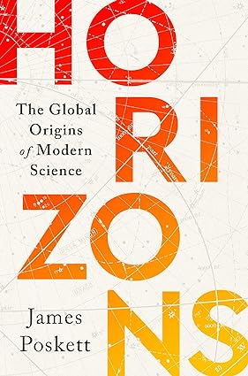

Horizons: The Global Origins of Modern Science Hardcover
The history of science as it has never been told before: a tale of outsiders and unsung heroes from far beyond the Western canon that most of us are taught.
When we think about the origins of modern science we usually begin in Europe. We remember the great minds of Nicolaus Copernicus, Isaac Newton, Charles Darwin, and Albert Einstein. But the history of science is not, and has never been, a uniquely European endeavor. Copernicus relied on mathematical techniques that came from Arabic and Persian texts. Newton’s laws of motion used astronomical observations made in Asia and Africa. When Darwin was writing On the Origin of Species, he consulted a sixteenth-century Chinese encyclopedia. And when Einstein studied quantum mechanics, he was inspired by the Bengali physicist, Satyendra Nath Bose.